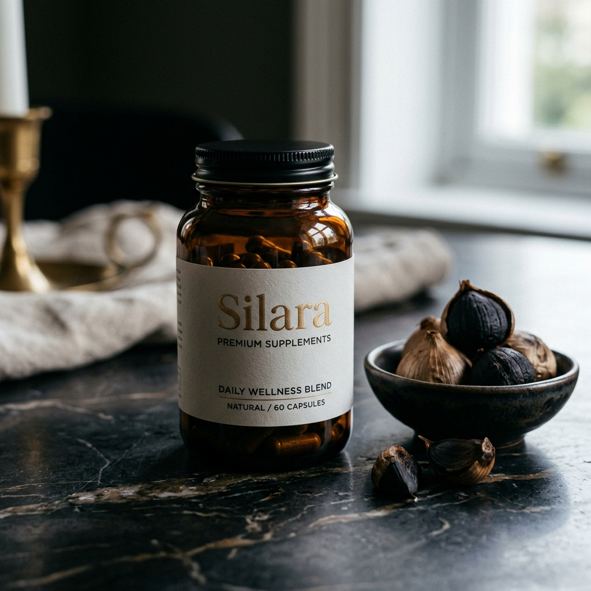

After 30 Years Reading Arteries, Here's the One Thing I Wish Every Patient Knew About Garlic and Circulation
The reason most people never see results from garlic supplements has nothing to do with garlic — and everything to do with which compound is actually reaching their bloodstream.
Every week, I see the same patient in different bodies.
They come into the appointment with a particular kind of quiet I've learned to recognize. They've been doing the work. Cut back on the salt. Started walking after dinner. Added a garlic supplement someone recommended, and taken it consistently for months.
Then they look at the reading on the screen and say some version of the same sentence: "The number isn't really moving."
The frustration in that room is real, and it deserves to be taken seriously. These aren't careless people. They're paying attention. They're investing time, effort and money into their own health — and experiencing what feels like a quiet betrayal.
Garlic Is Backed by Real Science. But "Garlic" Is Not One Thing.
In thirty years of cardiology, I've watched the evidence on garlic accumulate into something genuinely impressive. Randomized controlled trials. Meta-analyses. Peer-reviewed work from serious institutions. The research is real.
But what that research actually studies, and what most supplements actually deliver, are two different molecules. The compound that survives the aging process and reaches the bloodstream is called S-allyl cysteine — SAC. Most garlic products contain very little of it. They contain its fragile precursor, allicin — exactly what creates the smell, the burn, and the reflux — which mostly degrades long before it could do meaningful work.
If It Burned, Smelled, or Kept You Up at Night — That Was a Clue
Most people who've tried a garlic supplement have the same story. They lasted three or four weeks, then quietly stopped — because of the smell, the heartburn, or the moment one patient described as "smelling myself from across the room."
Those side effects were not the price of effectiveness. They were a symptom of the wrong form. The burning and the odor come from raw, unstabilized allicin — the same fragile compound that breaks down in your stomach and never reaches the vascular tissue where it would need to act.
What Thirty Years of Reading Arteries Actually Taught Me
Much of the most rigorous work on this compound comes from Dr. Karin Ried and her team at Australia's National Institute of Integrative Medicine, whose randomized controlled trials on standardized aged garlic have been published in peer-reviewed journals over the past fifteen years. When I want to understand what this compound does, that's the body of work I turn to. Here is how SAC works, the way I explain it to patients:
| Factor | Allicin — Raw / Powder | SAC — Fermented Black Garlic |
|---|---|---|
| Stability | Degrades with heat & acid | Survives digestion intact |
| Bioavailability | Most is lost | High · HPLC verifiable |
| Odor / Reflux | Strong, burning | None |
| Standardization | Unverifiable | 1.2 mg SAC · COA per batch |
Why Your Own Doctor Has Probably Never Mentioned This
If SAC is this well-studied, you might be asking the obvious question: why has my own cardiologist never brought it up? It's a fair question — and the answer isn't a conspiracy. It's structural.
I spent four years in medical school. The total time devoted to nutrition and supplement bioavailability was a few hours. We were trained rigorously in diagnosis, pharmaceuticals and procedures — not in the difference between one form of a compound and another.
So when a well-meaning physician says "you could try garlic," they usually mean it the way they'd mention eating more vegetables. That distinction was never part of their training, and no pharmaceutical representative is going to teach it to them. There's no patent on garlic. No sales force. No conference booth. It isn't a failure of your doctor's intelligence — it's a blind spot built into how medicine is taught and funded.
Ready to Try the Right Compound?
Silara Black Garlic · 1.2 mg SAC · HPLC verified · No smell, no burn · 60-day guarantee
What I Now Look for in Any Garlic Supplement — and Why Almost None Qualify

The criteria I apply now are straightforward. The product has to disclose the SAC content per serving — not milligrams of garlic, not "equivalent," but the actual active compound. It has to verify it through third-party HPLC analysis, with a Certificate of Analysis tied to the batch. And it has to deliver a dose in the range serious research actually uses. Most products meet none of these.
Silara's fermented black garlic standardizes to 1.2 mg of SAC per serving, verified by HPLC, with a Certificate of Analysis from the production batch. The fermentation is what generates the stable SAC in the first place — the same slow transformation that turns raw garlic into the soft, odorless form used in Asian cooking for centuries. No harsh compounds. No garlic odor. No stomach irritation.
Read the third-party HPLC analysisWhat Began to Happen When My Patients Tried It
Over the past year, I began recommending Silara to patients asking about natural support for their cardiovascular wellness — especially those who'd already tried other garlic supplements without much to show for it. I'm careful about what I claim: I haven't run a clinical trial on this product, and I won't pretend I have.
But the consistent feedback isn't about what patients noticed. It's about what they didn't notice. They didn't notice the smell that made them quit last time. They didn't notice reflux at two in the morning. They didn't notice any reason to stop taking it. In supplement research, that matters more than any single number: the best protocol is the one a patient actually maintains.

What the First Few Weeks Typically Look Like
Patients often ask what to expect once they start. I'm always careful here, because everyone's body is different and I can't promise anyone a specific result. But based on what patients consistently report, here's a rough picture.
The first week or two: most people notice what's absent more than what's present. No garlic odor. No reflux. No aftertaste. For someone who stopped their last supplement for those exact reasons, that alone is the difference between a routine they keep and one they abandon.
Weeks three to four: this is usually when the habit becomes automatic — one capsule with breakfast, no thought required. Many describe a sense that they're finally doing something consistent for their circulation, rather than starting and stopping.
Beyond a month: the research on SAC is built around consistent daily intake over time, not a single dose. The happiest patients treat it as a long-term foundation — the same way they treat a daily walk. Not a quick fix.
What Other Readers Have Told Us
"I've tried other garlic supplements before, but always stopped because of the awful reflux. With Silara, there's absolutely no burn. Plus, my last visit to my cardiologist went better than expected. I finally noticed a difference."
Robert M., 62 Verified"Zero odor and zero reflux. I was skeptical but my husband started taking it too after seeing my results. It's so easy to take just one capsule with breakfast."
Sarah K., 58 Verified"As someone who looks deep into what I put in my body, finding a product with HPLC verification and a glass jar is rare. I trust the quality, knowing it's doctor-backed."
David P., 66 VerifiedHow to Try It for Yourself
Silara ships directly to customers — not through Amazon, pharmacies, or distributors — to maintain quality control from the batch to your door. Every order includes a 60-day money-back guarantee. Two months is long enough to know.
If you do nothing
Tonight you take the same supplement that's been ending at your esophagus. Six months from now, the same frustration at the same screen — still wondering what you're doing wrong.
If you try the right form
One odorless capsule with breakfast. A compound your body can actually use, at the dose the research is built on — and the quiet confidence of finally doing something grounded in science.